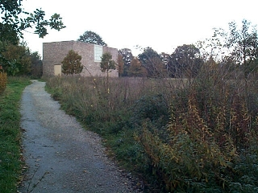
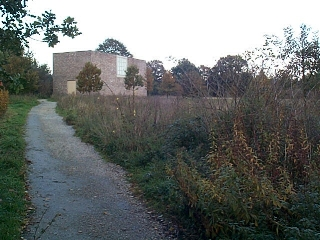

Near Düsseldorf, in the western part of Germany, the Insel Hombroich is a deliberate mixture of nature and art. Its motto is: "Kunst parallel zur Natur". In a setting that alternates between swamp, garden and park, various art pieces are displayed in specially constructed buildings.These pictures were made in oktober 2000. Click on the pictures to enlarge. You can also look at all the pictures in one go.
The various buildings are sprinkled throughout the park. To view their architecture in more detail have a look at LAVA, and a site by some German mathematicians.
 |
A stark contrast between bricks and trees is created. |  |
 |
What appears, at a distance, to be a dead tree, is in fact an artifact. On closer examination the entire objects appears covered with zinc plate. This is a work by Anatol Herzfeld. |
Between the woods, on the border of a lawn, geometric shapes are found. In my recollection these sculptures are made by Erwin Heerich. These are the shapes that, already since the classical ages, denote the intellectual superiority that man claims over nature. One of the shapes has a fractal like structure, which reflects a more modern attempt of men in representing nature. For a little more information on fractals you can have a look at my favorite fractal.
Not very far from the stream a building resembling a garden house (the atelier) is situated next to a garden. Whereas in most of the park is characterised by juxtapositions of nature and cultural artefacts, in this garden nature is forced into geometrical shapes, much like a formal french garden. One can say that culture is superimposed on top of nature.
To add another twist, this particular garden is, consciously or not, turned wild. It is as if nature has had its revenge on the formal structure.
Back to my home page.
November 2000.


{kind=link}
{kind=link}
{kind=link}
{kind=link}
{kind=link}
{kind=link}